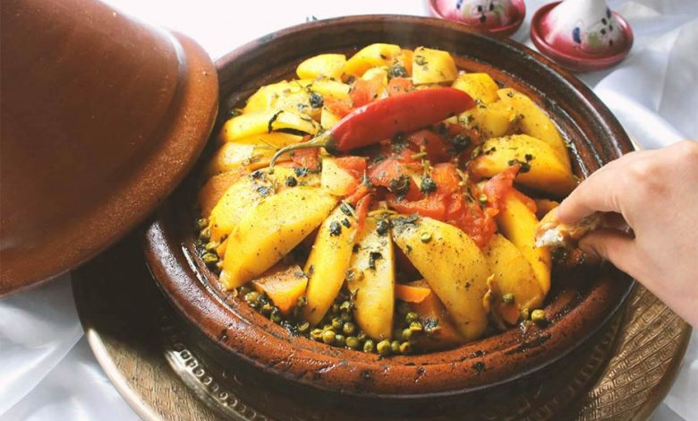

The morrocan tajin

Description :
one of the best things you can eat in morocco
Ingredients :
- tajin
- some type of meat or fish
- vegetables
how to make it
- put vegetables in the tajin
- put the type you choosed of meat
- close the tajin, and put everything on fire.